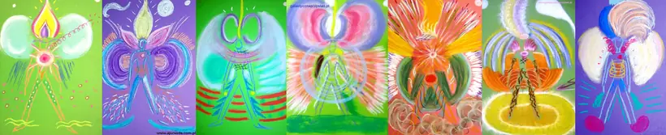

Propozycje znaku: łapacz snów
Dwa pomysły na znak w formie kolorowego łapacza snów z trzema piórkami, w kolorach strony. To propozycja do rozmowy, nie gotowe logo.
Jak wyglądałby w nagłówku strony
Galaktyczna Przystań MocyMonika Grzegorczyk
Galaktyczna Przystań MocyMonika Grzegorczyk
Na podglądzie w nagłówku nadal jest tymczasowy znak z pierścieniami aury. Po wyborze kierunku (lub otrzymaniu Pani pliku) podmienię go w całej stronie.